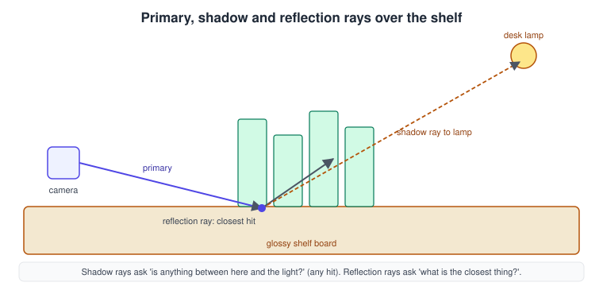
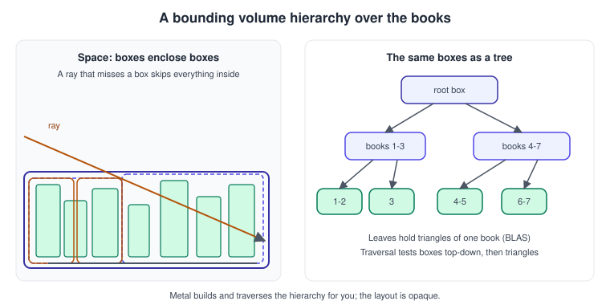
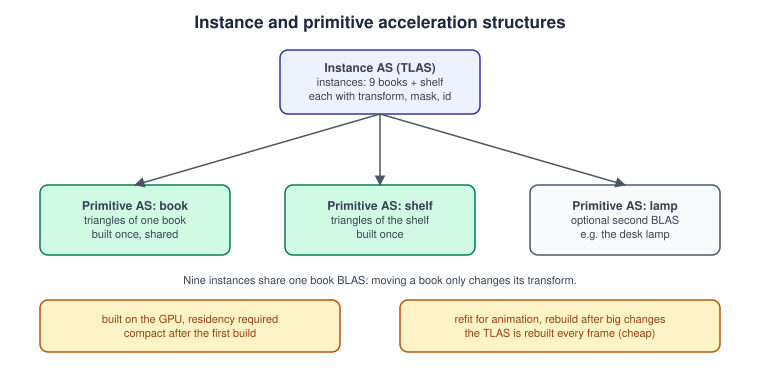
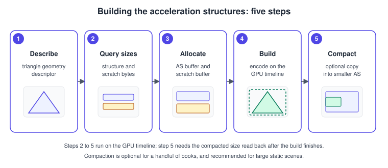
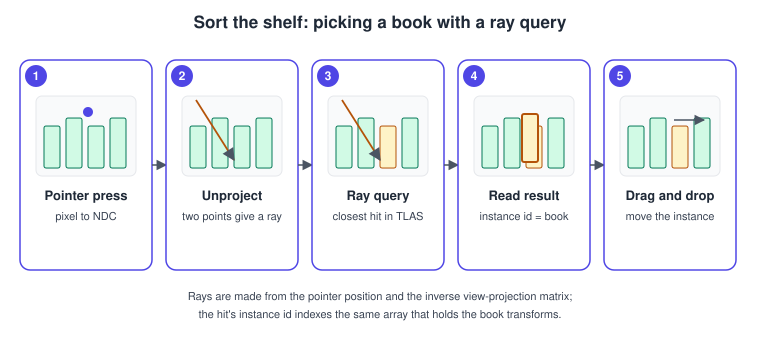

Ray Tracing in Metal
|
This content was generated with the assistance of AI and should be verified against the official documentation before being relied on in production. |
Ray tracing answers a different question from rasterisation. A rasteriser asks, for every triangle, "which pixels does it cover?"; a ray tracer asks, for every ray, "what is the first surface it hits?". The second question is the natural one for shadows, mirror-like reflections, ambient occlusion, picking and any visibility test that is not tied to the camera. Metal exposes it as a compute-style feature: you build acceleration structures that describe the scene, bind them to a kernel, and write shader code that casts rays and reads the hits.
The facts were checked in November 2026. The versions documented are Metal 4 on the 26 operating systems and Metal Shading Language 4.1 on the 27 operating systems (Xcode 27). Acceleration-structure ray tracing has been in Metal since iOS 14 and macOS 11 (the structures and the MTLAccelerationStructure types API), with later additions such as ray tracing from render functions, curves and motion blur in the following releases. Hardware-accelerated ray tracing is present on Apple GPUs from the A17 Pro and M3 generation; earlier Apple GPUs that support the API (it requires device.supportsRaytracing) run it on the shader cores, which is slower but works. The Metal 4 additions here are the MTL4 descriptors (MTL4PrimitiveAccelerationStructureDescriptor, MTL4InstanceAccelerationStructureDescriptor, MTL4AccelerationStructureTriangleGeometryDescriptor), building on the Metal 4 compute encoder, binding through MTL4ArgumentTable and keeping the structures resident with a residency set.
In the running example (a multiplatform SwiftUI app hosting an MTKView, Metal 4 path with a Metal 3 fallback, plus a visionOS target) this page covers two stages: ray-traced reflections on a glossy shelf and, later in the game, picking in Sort the shelf, where a ray query decides which book the pointer touched. The shared model is bookshelf.glb, loaded as described in Models with Model I/O and USD. Related pages: Compute Kernels (the kernels here are compute kernels), Argument Buffers and Bindless Resources (binding and residency), Shadows (the rasterised alternative), MetalFX Upscaling and Frame Interpolation (denoising and upscaling the ray-traced result), and the general Shadows and Global Illumination concept page.
Rays and rendering

A ray has an origin, a direction and a distance interval [min_distance, max_distance]. The interval matters more than it looks: min_distance is how you avoid a surface hitting itself (the "shadow acne" of ray tracing), and max_distance is how a shadow ray stops at the light instead of testing the whole scene. Three kinds of rays cover most real-time uses:
-
Primary rays start at the camera. A hybrid renderer usually does not trace them, because the rasteriser already knows what is visible; it reads the position and normal from a G-buffer instead.
-
Shadow rays go from a surface point to a light and only need to know whether anything blocks the way, so they ask for any hit and stop at the first one.
-
Reflection and refraction rays continue from a surface in the mirror or refracted direction and need the closest hit, because the colour of the nearest surface is what is seen.
The scene is organised into acceleration structures so that a ray touches a handful of boxes and triangles instead of every triangle in the scene.
Acceleration structures

An acceleration structure is an opaque, GPU-built hierarchy of bounding volumes (a BVH). Metal never exposes its layout; you ask for sizes, allocate storage, and let the GPU build it. There are two kinds:

| Kind | Role |
|---|---|
Primitive acceleration structure (bottom level) |
Built from geometry: triangles (with optional index buffer and a per-geometry transform), axis-aligned bounding boxes for custom intersection, curves, optionally with motion keyframes. One per distinct mesh: the book, the shelf, the lamp. |
Instance acceleration structure (top level) |
A list of instances. Each instance refers to a primitive structure by index and carries a transform, a visibility mask, a user ID and an offset into the intersection function table. Moving an object means changing its transform and rebuilding or refitting only this small structure. |
Nine books share one book primitive structure; the top level holds nine book instances and one shelf instance. This is the ray-tracing counterpart of instancing and it is why moving a book in Sort the shelf costs almost nothing.
Geometry descriptors
MTLAccelerationStructureTriangleGeometryDescriptor describes triangle geometry with these properties:
| Property | Meaning |
|---|---|
|
Where the positions are and the byte distance between consecutive vertices. With interleaved vertices set the offset to the position’s offset in the first vertex and the stride to the whole vertex stride. |
|
The format of each position, |
|
An optional index buffer, |
|
Number of triangles. |
|
Optional per-geometry transform, applied during the build. |
|
Marks the geometry as opaque so the hardware never calls an intersection function for it. Unset means the intersector may need alpha testing. |
|
Selects which intersection functions apply to this geometry. |
|
Allows an intersection function to run more than once for the same primitive, which makes traversal cheaper. |
The other geometry types are MTLAccelerationStructureBoundingBoxGeometryDescriptor (custom primitives found by an intersection function, such as spheres or signed distance fields), curve geometry for hair and fur (MTLAccelerationStructureCurveGeometryDescriptor), and motion variants of the triangle and bounding-box descriptors for motion blur, with keyframes between a start and an end time that you pass to the intersector as the ray’s time. The Metal 4 types mirror them: MTL4AccelerationStructureTriangleGeometryDescriptor and its siblings use MTL4BufferRange for buffers instead of buffer plus offset.
Building

-
Describe the geometry with a descriptor.
-
Query the sizes: the device returns
accelerationStructureSize,buildScratchBufferSizeandrefitScratchBufferSize. -
Allocate the structure with
makeAccelerationStructure(size:)and a private scratch buffer. -
Encode the build on an acceleration structure command encoder (Metal 3) or a Metal 4 compute encoder.
-
Optionally compact: write the compacted size, wait for the GPU, allocate a smaller structure and copy into it.
import Metal
import simd
/// Position-only mesh for ray tracing (the raster path can keep its own vertex format).
struct RayTracingMesh {
let vertexBuffer: MTLBuffer // float3 positions, tightly packed
let vertexStride: Int // 12 for packed float3
let indexBuffer: MTLBuffer? // uint32 indices
let triangleCount: Int
}
final class ShelfAccelerationStructures {
let device: MTLDevice
let queue: MTLCommandQueue
private(set) var bookStructure: MTLAccelerationStructure!
private(set) var shelfStructure: MTLAccelerationStructure!
private(set) var topLevel: MTLAccelerationStructure!
private var instanceBuffer: MTLBuffer!
private var topLevelScratch: MTLBuffer!
private let instanceCount: Int
init(device: MTLDevice, queue: MTLCommandQueue, instanceCount: Int) {
precondition(device.supportsRaytracing, "Ray tracing needs a device with ray tracing support")
self.device = device
self.queue = queue
self.instanceCount = instanceCount
}
// MARK: Bottom level
/// Builds (and compacts) a primitive acceleration structure for one mesh.
func buildPrimitiveStructure(for mesh: RayTracingMesh, label: String) -> MTLAccelerationStructure {
let geometry = MTLAccelerationStructureTriangleGeometryDescriptor()
geometry.vertexBuffer = mesh.vertexBuffer
geometry.vertexBufferOffset = 0
geometry.vertexStride = mesh.vertexStride
geometry.vertexFormat = .float3
if let indices = mesh.indexBuffer {
geometry.indexBuffer = indices
geometry.indexType = .uint32
}
geometry.triangleCount = mesh.triangleCount
geometry.opaque = true // books and shelf have no cut-outs
let descriptor = MTLPrimitiveAccelerationStructureDescriptor()
descriptor.geometryDescriptors = [geometry]
descriptor.usage = [] // [.refit] if vertices will change
let sizes = device.accelerationStructureSizes(descriptor: descriptor)
let structure = device.makeAccelerationStructure(size: sizes.accelerationStructureSize)!
structure.label = label
let scratch = device.makeBuffer(length: sizes.buildScratchBufferSize,
options: .storageModePrivate)!
let sizeBuffer = device.makeBuffer(length: MemoryLayout<UInt32>.size,
options: .storageModeShared)!
// Build, and ask for the compacted size, in one command buffer.
let commandBuffer = queue.makeCommandBuffer()!
let encoder = commandBuffer.makeAccelerationStructureCommandEncoder()!
encoder.build(accelerationStructure: structure, descriptor: descriptor,
scratchBuffer: scratch, scratchBufferOffset: 0)
encoder.writeCompactedSize(accelerationStructure: structure, buffer: sizeBuffer, offset: 0)
encoder.endEncoding()
commandBuffer.commit()
commandBuffer.waitUntilCompleted() // acceptable at load time only
// Compact: allocate a smaller structure and copy into it.
let compactedSize = Int(sizeBuffer.contents().load(as: UInt32.self))
guard compactedSize > 0, compactedSize < sizes.accelerationStructureSize,
let compacted = device.makeAccelerationStructure(size: compactedSize) else {
return structure
}
compacted.label = label + " (compacted)"
let copyBuffer = queue.makeCommandBuffer()!
let copyEncoder = copyBuffer.makeAccelerationStructureCommandEncoder()!
copyEncoder.copyAndCompact(sourceAccelerationStructure: structure,
destinationAccelerationStructure: compacted)
copyEncoder.endEncoding()
copyBuffer.commit()
copyBuffer.waitUntilCompleted()
return compacted
}
// MARK: Top level
private func packed(_ m: simd_float4x4) -> MTLPackedFloat4x3 {
MTLPackedFloat4x3(columns: (
MTLPackedFloat3Make(m.columns.0.x, m.columns.0.y, m.columns.0.z),
MTLPackedFloat3Make(m.columns.1.x, m.columns.1.y, m.columns.1.z),
MTLPackedFloat3Make(m.columns.2.x, m.columns.2.y, m.columns.2.z),
MTLPackedFloat3Make(m.columns.3.x, m.columns.3.y, m.columns.3.z)))
}
/// Writes one instance descriptor per object: index 0 is the book structure,
/// index 1 is the shelf structure. `transforms[i]` is the model matrix of instance i.
func writeInstances(transforms: [simd_float4x4], structureIndices: [UInt32]) {
let stride = MemoryLayout<MTLAccelerationStructureInstanceDescriptor>.stride
if instanceBuffer == nil {
instanceBuffer = device.makeBuffer(length: stride * instanceCount,
options: .storageModeShared)
instanceBuffer.label = "Instance descriptors"
}
let pointer = instanceBuffer.contents()
.bindMemory(to: MTLAccelerationStructureInstanceDescriptor.self, capacity: instanceCount)
for i in 0..<instanceCount {
var d = MTLAccelerationStructureInstanceDescriptor()
d.accelerationStructureIndex = structureIndices[i]
d.mask = 0xFF
d.options = .opaque
d.intersectionFunctionTableOffset = 0
d.transformationMatrix = packed(transforms[i])
pointer[i] = d
}
}
/// Builds the instance structure; call it every frame the transforms change.
func buildTopLevel(into commandBuffer: MTLCommandBuffer) {
let descriptor = MTLInstanceAccelerationStructureDescriptor()
descriptor.instanceCount = instanceCount
descriptor.instanceDescriptorBuffer = instanceBuffer
descriptor.instanceDescriptorType = .default
descriptor.instancedAccelerationStructures = [bookStructure, shelfStructure]
if topLevel == nil {
let sizes = device.accelerationStructureSizes(descriptor: descriptor)
topLevel = device.makeAccelerationStructure(size: sizes.accelerationStructureSize)
topLevelScratch = device.makeBuffer(length: sizes.buildScratchBufferSize,
options: .storageModePrivate)
}
let encoder = commandBuffer.makeAccelerationStructureCommandEncoder()!
encoder.label = "Build top level"
encoder.build(accelerationStructure: topLevel, descriptor: descriptor,
scratchBuffer: topLevelScratch, scratchBufferOffset: 0)
encoder.endEncoding()
}
func loadStructures(book: RayTracingMesh, shelf: RayTracingMesh) {
bookStructure = buildPrimitiveStructure(for: book, label: "Book")
shelfStructure = buildPrimitiveStructure(for: shelf, label: "Shelf")
}
}Notes on the code:
-
The size query is a device call and needs only the descriptor; the structure and the scratch buffer are allocated once and reused. The scratch buffer is
storageModePrivatebecause only the GPU uses it, and may be shared between builds if they are serialised. -
Compaction usually saves a good part of the memory for static meshes, but it costs a second pass and a CPU round trip, so use it at load time for meshes that never change.
writeCompactedSizewrites a 32-bit value by default (the other overload takessizeDataType). -
usage = [.refit]is needed if you later call therefitmethods of the acceleration structure encoder; refit updates vertex positions (a skinned character) much more cheaply than rebuilding, at the cost of a slightly worse hierarchy as the shape departs from the original. Other usage options (.preferFastBuild,.extendedLimits) trade build time, trace time and the number of primitives. -
The instance buffer is
storageModeSharedand rewritten each frame by the CPU; with many instances a compute kernel can write it instead. The top-level structure is rebuilt every frame: with tens or thousands of instances that is cheap, and it is the supported way to animate rigid objects. -
The
maskof an instance is ANDed with the ray’s mask in the shader, a free way to give shadow rays and reflection rays different visible sets.instanceDescriptorTypealso offers user-ID and motion variants when you want a user instance ID or motion transforms.
Metal 4 build and binding
The Metal 4 path builds on the compute encoder of an MTL4CommandBuffer, with buffer ranges instead of buffers and offsets:
func encodeBuild(commandBuffer: MTL4CommandBuffer,
structure: MTLAccelerationStructure,
descriptor: MTL4AccelerationStructureDescriptor,
scratch: MTLBuffer) {
let encoder = commandBuffer.makeComputeCommandEncoder()!
encoder.label = "Acceleration structure build"
encoder.build(destinationAccelerationStructure: structure,
descriptor: descriptor,
scratchBuffer: MTL4BufferRange(bufferAddress: scratch.gpuAddress,
length: UInt64(scratch.length)))
encoder.endEncoding()
}
// Binding for a ray tracing kernel: the structure is a resource ID in the argument table,
// and every structure the top level references must be in a residency set.
func bind(table: MTL4ArgumentTable, topLevel: MTLAccelerationStructure) {
table.setResource(topLevel.gpuResourceID, bufferIndex: 0)
}Source: MTL4ComputeCommandEncoder and MTL4ArgumentTable
On the Metal 3 path you call setAccelerationStructure(_:bufferIndex:) on the compute encoder and useResource(_:usage:) for the primitive structures too, because the top level only holds references. On Metal 4 add the top level and all bottom-level structures to the MTLResidencySet of the queue, see Argument Buffers and Bindless Resources. The most common first-day failure is a hang or a black result caused by a missing primitive structure in the resource list.
Intersecting in MSL
The shader side lives in the <metal_raytracing> header and the metal::raytracing namespace; include the header explicitly next to <metal_stdlib>. There are two APIs for tracing:
intersector |
intersection_query |
|
|---|---|---|
Style |
One call returns the closest (or any) hit |
A loop that you drive: |
Typical use |
Shadows, reflections, ambient occlusion |
Picking, custom alpha tests, anything that needs to inspect every candidate |
Customising |
Tags and options on the object, plus intersection functions |
Code in your own loop, no function table needed |
Result |
|
Committed or candidate values read through accessor functions |
Tags select what data the hit carries: triangle_data gives barycentric coordinates, instancing makes the structure an instance structure and returns the instance ID, primitive_motion and max_levels<N> cover motion blur and limited nesting. Pick only the tags you need; each costs registers.
The ray
#include <metal_stdlib>
#include <metal_raytracing>
using namespace metal;
using namespace raytracing;
ray r;
r.origin = float3(0.0, 1.0, 0.0);
r.direction = normalize(float3(0.2, -1.0, 0.1));
r.min_distance = 0.001; // avoids self-intersection
r.max_distance = 100.0; // shadow rays: distance to the lightA shorter form is the constructor ray(origin, direction, min_distance, max_distance), used in the kernels below.
Intersection functions
Rays against bounding-box geometry, or against triangles that are not opaque, call intersection functions: shader functions that decide whether a candidate counts. They are declared with [[intersection(triangle, triangle_data)]] or [[intersection(bounding_box)]], collected in an intersection function table, and linked through the instance’s intersectionFunctionTableOffset and the geometry’s offset. A triangle intersection function typically samples an alpha texture at the barycentric position and rejects transparent texels (leaves, wire fences). Because they interrupt traversal, mark everything opaque that can be opaque; opaque triangle geometry then never leaves the hardware path.
Query-based tracing
intersection_query is the right tool when you need control over traversal. Its loop reads candidates and chooses which to commit, so alpha testing and "closest of several categories" logic live in your kernel instead of in separate functions. Ray tracing from render (vertex and fragment) functions, as opposed to compute kernels, is only available where device.supportsRaytracingFromRender is true.
Hybrid shadows and reflections

The hybrid pipeline draws the scene as before, writes world position and normal into a G-buffer (see Deferred and Tile Shading), then runs a compute kernel that, for each pixel, casts a shadow ray towards the lamp and a reflection ray from the glossy shelf. The output is a shadow mask and a reflection colour that the lighting pass composites.
#include <metal_stdlib>
#include <metal_raytracing>
using namespace metal;
using namespace raytracing;
struct RayUniforms {
float3 cameraPosition;
float shadowBias;
float3 lightPosition;
float reflectionStrength;
};
kernel void shadow_and_reflection(
texture2d<float, access::read> gPosition [[texture(0)]], // xyz = world position, w = 1 when covered
texture2d<float, access::read> gNormal [[texture(1)]], // xyz = world normal
texture2d<float, access::write> shadowMask [[texture(2)]], // r = 1 lit, 0 shadowed
texture2d<float, access::write> reflectionOut [[texture(3)]],
instance_acceleration_structure scene [[buffer(0)]],
constant RayUniforms& u [[buffer(1)]],
constant float3* instanceColors [[buffer(2)]],
uint2 gid [[thread_position_in_grid]])
{
if (gid.x >= gPosition.get_width() || gid.y >= gPosition.get_height()) { return; }
float4 positionSample = gPosition.read(gid);
if (positionSample.w == 0.0) { // sky: nothing to trace
shadowMask.write(float4(1.0), gid);
reflectionOut.write(float4(0.0), gid);
return;
}
float3 position = positionSample.xyz;
float3 normal = normalize(gNormal.read(gid).xyz);
// Shadow ray: any hit between the surface and the lamp means shadow.
float3 toLight = u.lightPosition - position;
float lightDistance = length(toLight);
ray shadowRay(position + normal * u.shadowBias, toLight / lightDistance,
0.001, lightDistance - u.shadowBias);
intersector<triangle_data, instancing> shadowIntersector;
shadowIntersector.accept_any_intersection(true); // stop at the first hit
auto shadowHit = shadowIntersector.intersect(shadowRay, scene);
float lit = (shadowHit.type == intersection_type::none) ? 1.0 : 0.0;
shadowMask.write(float4(lit, 0.0, 0.0, 1.0), gid);
// Reflection ray: the closest hit decides the colour.
float3 viewDirection = normalize(position - u.cameraPosition);
float3 reflected = reflect(viewDirection, normal);
ray reflectionRay(position + normal * u.shadowBias, reflected, 0.001, 50.0);
intersector<triangle_data, instancing> reflectionIntersector;
auto reflectionHit = reflectionIntersector.intersect(reflectionRay, scene);
float3 reflectionColor = float3(0.05, 0.07, 0.10); // sky colour on a miss
if (reflectionHit.type == intersection_type::triangle) {
reflectionColor = instanceColors[reflectionHit.instance_id];
}
reflectionOut.write(float4(reflectionColor * u.reflectionStrength, 1.0), gid);
}Source: Metal Shading Language Specification, ray tracing and MTLInstanceAccelerationStructureDescriptor
The host code that dispatches it (Metal 3 path; on Metal 4 the same kernel is bound through the argument table):
func encodeRayPass(commandBuffer: MTLCommandBuffer,
pipeline: MTLComputePipelineState,
structures: ShelfAccelerationStructures,
gPosition: MTLTexture, gNormal: MTLTexture,
shadowMask: MTLTexture, reflection: MTLTexture,
uniforms: inout RayUniforms, instanceColors: MTLBuffer) {
guard let encoder = commandBuffer.makeComputeCommandEncoder() else { return }
encoder.label = "Ray traced shadows and reflections"
encoder.setComputePipelineState(pipeline)
encoder.setAccelerationStructure(structures.topLevel, bufferIndex: 0)
encoder.setBytes(&uniforms, length: MemoryLayout<RayUniforms>.stride, index: 1)
encoder.setBuffer(instanceColors, offset: 0, index: 2)
encoder.setTexture(gPosition, index: 0)
encoder.setTexture(gNormal, index: 1)
encoder.setTexture(shadowMask, index: 2)
encoder.setTexture(reflection, index: 3)
// The top level only references the primitive structures: make them resident.
encoder.useResource(structures.bookStructure, usage: .read)
encoder.useResource(structures.shelfStructure, usage: .read)
let width = pipeline.threadExecutionWidth
let height = max(pipeline.maxTotalThreadsPerThreadgroup / width, 1)
encoder.dispatchThreads(MTLSize(width: gPosition.width, height: gPosition.height, depth: 1),
threadsPerThreadgroup: MTLSize(width: width, height: height, depth: 1))
encoder.endEncoding()
}
struct RayUniforms {
var cameraPosition: SIMD3<Float>
var shadowBias: Float
var lightPosition: SIMD3<Float>
var reflectionStrength: Float
}Source: MTLComputeCommandEncoder
In practice the output is noisy when the rays are soft (area lights, rough reflections), so a ray-traced frame ends with a denoiser or a temporal accumulation; MetalFX offers a temporal denoised scaler for exactly that, covered in MetalFX Upscaling and Frame Interpolation. The hard shadow above needs no denoiser.
Sort the shelf: picking with a ray query

The game shows the nine books in the wrong order and asks the player to drag them into order. Picking needs a visibility test from the pointer into the scene, which is exactly one ray. Using the same instance structure as the reflections means the hit’s instance ID is already the index of the book in the game’s array, with no ID buffer and no read-back of an extra render target.
#include <metal_stdlib>
#include <metal_raytracing>
using namespace metal;
using namespace raytracing;
struct PickParams {
float4x4 inverseViewProjection;
float2 ndc; // pointer position, x and y in -1 ... 1
};
struct PickResult {
uint instanceID; // 0xFFFFFFFF when nothing was hit
float distance;
};
kernel void pick_book(
instance_acceleration_structure scene [[buffer(0)]],
constant PickParams& params [[buffer(1)]],
device PickResult& result [[buffer(2)]])
{
// Unproject the pointer at the near and far plane (Metal NDC depth runs 0 to 1).
float4 nearPoint = params.inverseViewProjection * float4(params.ndc, 0.0, 1.0);
float4 farPoint = params.inverseViewProjection * float4(params.ndc, 1.0, 1.0);
float3 origin = nearPoint.xyz / nearPoint.w;
float3 target = farPoint.xyz / farPoint.w;
float3 direction = normalize(target - origin);
ray pointerRay(origin, direction, 0.0, 1000.0);
intersection_params queryParams;
queryParams.assume_geometry_type(geometry_type::triangle);
queryParams.force_opacity(forced_opacity::opaque);
intersection_query<triangle_data, instancing> query(pointerRay, scene, queryParams);
while (query.next()) {
if (query.get_candidate_intersection_type() == intersection_type::triangle) {
query.commit_triangle_intersection(); // closest committed hit wins
}
}
result.instanceID = 0xFFFFFFFF;
result.distance = 0.0;
if (query.get_committed_intersection_type() == intersection_type::triangle) {
result.instanceID = query.get_committed_instance_id();
result.distance = query.get_committed_distance();
}
}import Metal
import simd
struct PickParams {
var inverseViewProjection: simd_float4x4
var ndc: SIMD2<Float>
}
struct PickResult {
var instanceID: UInt32
var distance: Float
}
final class ShelfPicker {
private let queue: MTLCommandQueue
private let pipeline: MTLComputePipelineState
private let resultBuffer: MTLBuffer
init(device: MTLDevice, queue: MTLCommandQueue, library: MTLLibrary) throws {
self.queue = queue
pipeline = try device.makeComputePipelineState(function: library.makeFunction(name: "pick_book")!)
resultBuffer = device.makeBuffer(length: MemoryLayout<PickResult>.stride,
options: .storageModeShared)!
}
/// `point` is in view coordinates (origin top left), `size` is the drawable size in the same units.
func pick(at point: CGPoint, viewSize size: CGSize, inverseViewProjection: simd_float4x4,
structures: ShelfAccelerationStructures,
completion: @escaping (Int?) -> Void) {
var params = PickParams(
inverseViewProjection: inverseViewProjection,
ndc: SIMD2(Float(2 * point.x / size.width - 1), Float(1 - 2 * point.y / size.height)))
guard let commandBuffer = queue.makeCommandBuffer(),
let encoder = commandBuffer.makeComputeCommandEncoder() else { completion(nil); return }
encoder.setComputePipelineState(pipeline)
encoder.setAccelerationStructure(structures.topLevel, bufferIndex: 0)
encoder.setBytes(¶ms, length: MemoryLayout<PickParams>.stride, index: 1)
encoder.setBuffer(resultBuffer, offset: 0, index: 2)
encoder.useResource(structures.bookStructure, usage: .read)
encoder.useResource(structures.shelfStructure, usage: .read)
encoder.dispatchThreads(MTLSize(width: 1, height: 1, depth: 1),
threadsPerThreadgroup: MTLSize(width: 1, height: 1, depth: 1))
encoder.endEncoding()
commandBuffer.addCompletedHandler { [resultBuffer] _ in
let result = resultBuffer.contents().load(as: PickResult.self)
DispatchQueue.main.async {
// The shelf is instance 9: only instances 0...8 are books.
completion(result.instanceID < 9 ? Int(result.instanceID) : nil)
}
}
commandBuffer.commit()
}
}
/// Where the pointer ray crosses the horizontal plane at the picked book's height.
/// Used while dragging: the book follows the pointer along this plane.
func dragPosition(rayOrigin: SIMD3<Float>, rayDirection: SIMD3<Float>, planeY: Float) -> SIMD3<Float>? {
guard abs(rayDirection.y) > 1e-5 else { return nil }
let t = (planeY - rayOrigin.y) / rayDirection.y
return t > 0 ? rayOrigin + rayDirection * t : nil
}Source: MTLComputeCommandEncoder and MTLCommandBuffer
Design notes for the game:
-
The pick result arrives a frame or two after the pointer event because the GPU runs it asynchronously. For "pick when the finger goes down" this is imperceptible; for hover highlights read the previous frame’s result.
-
Moving a book while dragging only changes its entry in the instance descriptors; the top level is rebuilt in the next frame’s command buffer. The primitive structure of the book is never touched.
-
The same instance IDs drive the sorting logic, so the game’s
books[id]array and the instance buffer share one index. -
On visionOS the pointer ray comes from the gaze-and-pinch input instead of the screen; the kernel is unchanged (see Metal on visionOS).
-
A CPU ray-versus-AABB test is enough for nine books. The GPU path is used here because the same acceleration structure already exists for the reflections, and it scales unchanged to a shelf of thousands.
Common mistakes and performance
-
Self-intersection. Always offset the origin along the normal and give the ray a small
min_distance. A shadow ray withmax_distanceequal to the light distance still hits the light’s own geometry if the light is a mesh; subtract a small epsilon. -
Missing resources. Primitive structures must be resident, either with
useResource(_:usage:)or a residency set; a top level alone is not enough. -
Mismatched instance counts.
instanceCountmust equal the number of valid descriptors written; stale descriptors from a previous frame point at freed structures. -
Stale hierarchy. Moving vertices without rebuilding or refitting returns hits against the old shape. Refit is cheaper but degrades quality over large deformations; schedule a periodic rebuild.
-
Everything non-opaque. Forgetting
opaqueon geometry (orforce_opacityon the query) sends traversal through intersection functions for every triangle, an order of magnitude slower. -
Too many rays. Cost scales with the ray count and with divergence. Trace shadows and reflections at half resolution and upscale or denoise, use masks to skip sky pixels, and keep rays of one threadgroup coherent (neighbouring pixels, similar directions).
-
Big dispatches in the frame. A pass that takes more than a few milliseconds on the target device should be reduced in resolution, or moved to a lower rate, before it is optimised in shader code.
-
Intersector tags. Request only the data you read. A
triangle_datatag you never use still costs registers. -
Build in the frame. Build static structures at load and compact them; rebuild only the top level (and refit dynamic bottom levels) per frame.
Use the Metal debugger’s acceleration structure viewer in Xcode to inspect what was built, see Debugging and Profiling.
What changed and where the books are outdated
| Source | Then and now |
|---|---|
Metal by Tutorials, 4th edition (chapters 27 to 29) |
"Ray tracing" there means raymarching and signed distance fields in a fragment or compute shader. That technique is still valid for volumes and fractals, but Metal also has hardware ray tracing with |
|
Deprecated since iOS 17 and macOS 14 in favour of acceleration structures and the shading-language intersector. New code should not use it. |
Metal Programming Guide |
Predates the API (2017, Metal 2); it has no acceleration structures, intersectors or intersection queries. |
Metal 4 (26 operating systems) |
Builds go through a Metal 4 compute encoder using |
Both books |
Neither covers instance structures, compaction or intersection queries, nor the hybrid pipeline shown here. |